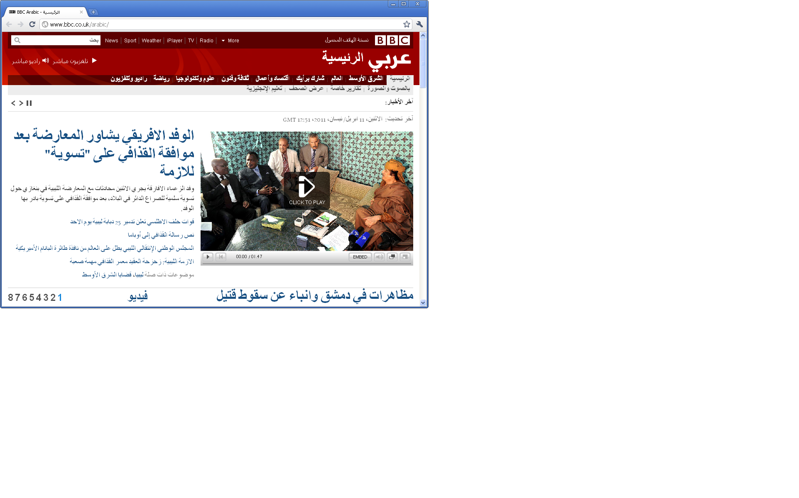
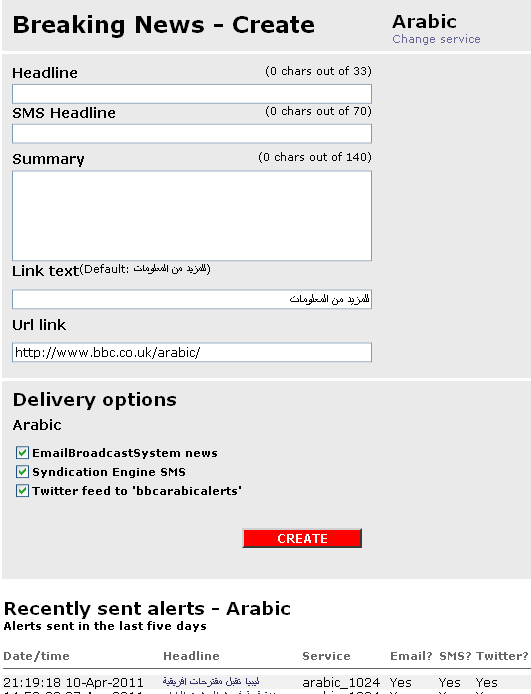
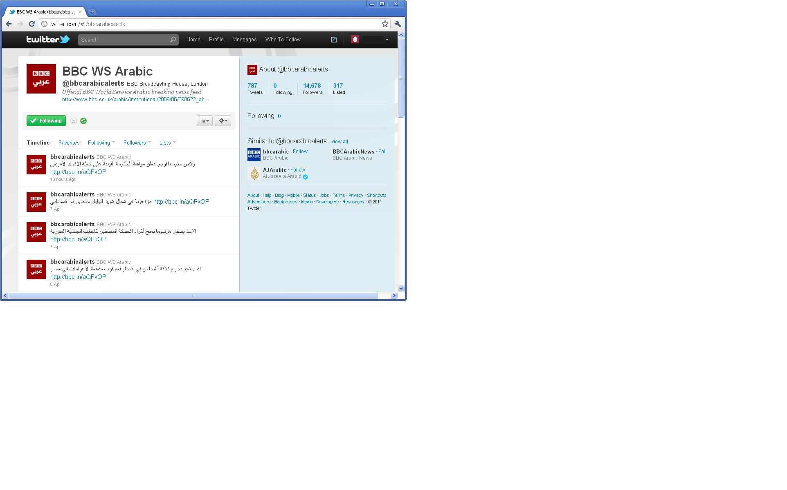
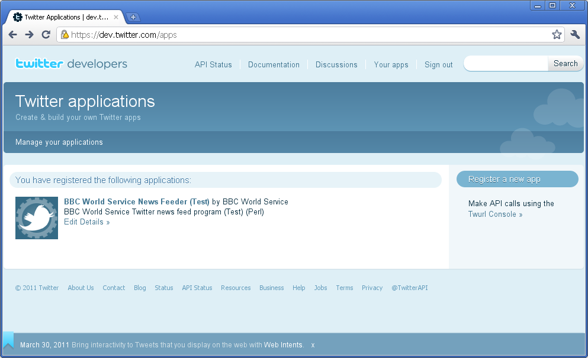
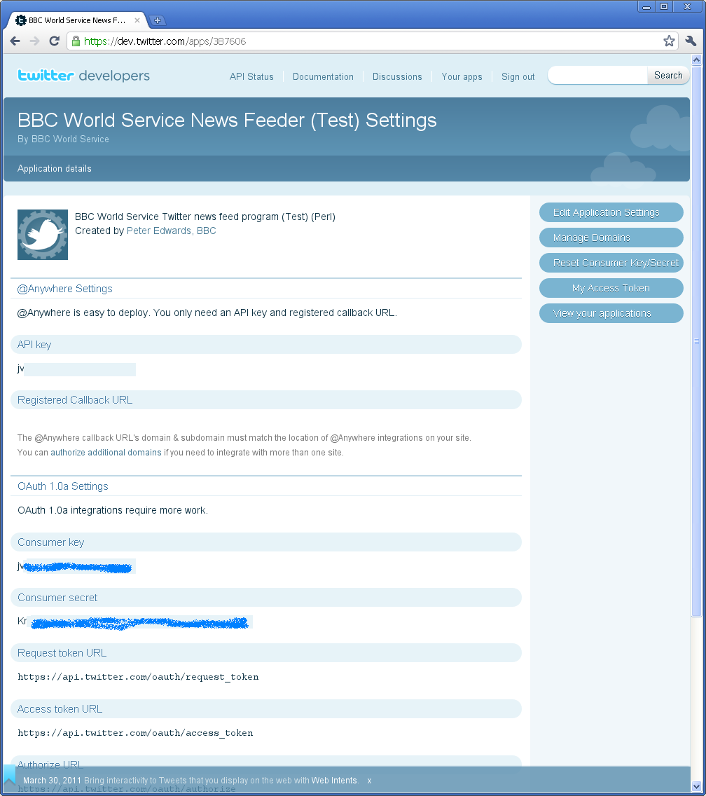

Adding OAuth to BBC World Service Arabic Twitter Feeder
Peter Edwards
Dragonstaff Ltd / BBC
BBC World Service
- 25 different language services
- BBC Arabic, launched January 3rd 1938
- radio
- websites - http://bbcarabic.com
- mobile - http://bbcarabic.com/mobile
- email and SMS
[any material that should appear in print but not on the slide]
BBCArabic.com

[any material that should appear in print but not on the slide]
Breaking News
As well as the web sites there are breaking news feeds
- SMS (paid subscribers)
I wrote a tool the Arabic journalists use to send these out
[any material that should appear in print but not on the slide]
Breaking News Tool

[any material that should appear in print but not on the slide]
Twitter bbcarabicalerts

[any material that should appear in print but not on the slide]
Typical tweet
- رئيس جنوب افريقيا يعلن موافقة الحكومة الليبية على خطة الاتحاد الافريقي http://bbc.in/aQFkOP
- That translates as "President of South Africa, the Libyan government announced the approval of a plan of the African Union"
[any material that should appear in print but not on the slide]
How was I sending them out?
Net::Twitter::Lite
- simple POST to Twitter verified by Twitter username/password
[any material that should appear in print but not on the slide]
Ohnoes! Twitter woes
- Twitter moves to using OAuth signed requests
- more secure, exposes consumer and app access keys rather than username/password
- easy to revoke compromised keys
- Twitter gave a deadline to turn off simple authorisation
[any material that should appear in print but not on the slide]
How to sign a request
Net::Twitter::Lite
- the simple one you should use now
- does all the hard work for you
- at the time didn't support OAuth
- so I was stuck
[any material that should appear in print but not on the slide]
What provides low level support?
Net::OAuth
- low level module
- handles OAuth signing using app and user keys
[any material that should appear in print but not on the slide]
Other CPAN Modules
Cool. What other CPAN Twitter modules support this?
Net::Twitter
- supports OAuth
- but uses Moose
- a lot of CPAN deps
- using legacy FC3 server, hard to install deps
- hassle of getting approval to install new CPAN modules
[any material that should appear in print but not on the slide]
Approval, you say?
- Development Manager
- BBC Digital Delivery & Operations team
- Redbee operations partner
Approval, you say?
Sometimes it's quicker and more practical to hack on the code
But I'm getting ahead of myself
[any material that should appear in print but not on the slide]
Complexity
Let's see what the complexity is of using these modules
$ export PERL5LIB= $ eval $(perl -Mlocal::lib=$HOME/perl_local_temp) $ cpanm Net::OAuth looking in /home/edwarp11/.cpanm/work/1302607609.14616/
[any material that should appear in print but not on the slide]
Net::OAuth Deps
Net-OAuth-0.27.tar.gz Digest-SHA1-2.13.tar.gz Class-Data-Inheritable-0.08.tar.gz Class-Accessor-0.34.tar.gz Encode-2.42.tar.gz Test-Warn-0.23.tar.gz Sub-Uplevel-0.22.tar.gz Tree-DAG_Node-1.06.tar.gz
not bad
[any material that should appear in print but not on the slide]
Net::Twitter::Lite
$ cpanm Net::Twitter::Lite
Net-Twitter-Lite-0.10004.tar.gz URI-1.58.tar.gz Crypt-SSLeay-0.58.tar.gz JSON-2.51.tar.gz JSON-XS-2.3.tar.gz common-sense-3.4.tar.gz JSON-Any-1.27.tar.gz
not bad at all
[any material that should appear in print but not on the slide]
Net::Twitter
$ cpanm Net::Twitter
Net-Twitter-3.17001.tar.gz DateTime-0.66.tar.gz DateTime-TimeZone-1.33.tar.gz Class-Singleton-1.4.tar.gz parent-0.225.tar.gz Params-Validate-0.95.tar.gz Attribute-Handlers-0.88.tar.gz ExtUtils-CBuilder-0.280202.tar.gz Class-Load-0.06.tar.gz
[any material that should appear in print but not on the slide]
...
Test-Fatal-0.003.tar.gz Try-Tiny-0.09.tar.gz Exporter-5.63.tar.gz DateTime-Locale-0.45.tar.gz List-MoreUtils-0.30.tar.gz Test-Exception-0.31.tar.gz Data-Visitor-0.27.tar.gz namespace-clean-0.20.tar.gz Package-Stash-0.29.tar.gz Dist-CheckConflicts-0.02.tar.gz
[any material that should appear in print but not on the slide]
...
Sub-Exporter-0.982.tar.gz Params-Util-1.03.tar.gz Sub-Install-0.925.tar.gz Data-OptList-0.106.tar.gz Package-DeprecationManager-0.10.tar.gz Test-Requires-0.06.tar.gz Package-Stash-XS-0.22.tar.gz Sub-Name-0.05.tar.gz Sub-Identify-0.04.tar.gz B-Hooks-EndOfScope-0.09.tar.gz
[any material that should appear in print but not on the slide]
...
Variable-Magic-0.46.tar.gz Tie-ToObject-0.03.tar.gz Test-use-ok-0.02.tar.gz Task-Weaken-1.04.tar.gz Moose-2.0000.tar.gz MRO-Compat-0.11.tar.gz Class-C3-0.23.tar.gz Algorithm-C3-0.08.tar.gz Eval-Closure-0.03.tar.gz Devel-GlobalDestruction-0.03.tar.gz
[any material that should appear in print but not on the slide]
...
Scope-Guard-0.20.tar.gz DateTime-Format-Strptime-1.5000.tar.gz Digest-SHA-5.61.tar.gz namespace-autoclean-0.12.tar.gz Devel-StackTrace-1.27.tar.gz MooseX-Role-Parameterized-0.25.tar.gz MooseX-MultiInitArg-0.01.tar.gz
[any material that should appear in print but not on the slide]
...
Phew. But...
Building and testing Net-Twitter-3.17001 ... FAIL ! Installing Net::Twitter failed. See /home/edwarp11/.cpanm/build.log for details. t/01_basic.t ................... skipped: LWP::UserAgent 5.819 required Can't locate object method "add_handler" via package "LWP::UserAgent" at /home/edwarp11/.cpanm/work/1302608105.26692/Net-Twitter-3.17001/blib/lib/Net/Twitter/Role/RateLimit.pm line 77. # Looks like your test exited with 9 before it could output anything. t/leak.t .......................
Oops
[any material that should appear in print but not on the slide]
...
$ cpanm LWP::UserAgent
libwww-perl-6.02.tar.gz LWP-MediaTypes-6.01.tar.gz Encode-Locale-1.02.tar.gz HTTP-Message-6.02.tar.gz IO-Compress-2.033.tar.gz Compress-Raw-Bzip2-2.033.tar.gz Compress-Raw-Zlib-2.033.tar.gz HTTP-Date-6.00.tar.gz HTTP-Negotiate-6.00.tar.gz File-Listing-6.02.tar.gz HTTP-Daemon-6.00.tar.gz Net-HTTP-6.00.tar.gz HTTP-Cookies-6.00.tar.gz WWW-RobotRules-6.01.tar.gz
[any material that should appear in print but not on the slide]
...
$ cpanm Net::Twitter
Fetching http://search.cpan.org/CPAN/authors/id/M/MM/MMIMS/Net-Twitter-3.17001.tar.gz ... OK Configuring Net-Twitter-3.17001 ... OK Building and testing Net-Twitter-3.17001 ... OK Successfully installed Net-Twitter-3.17001
Phew! Way too much
[any material that should appear in print but not on the slide]
Hack on the Code
All I needed was a quick change to an existing app. How hard can it be?
Original code was
my $nt = Net::Twitter::Lite->new(
username => $username,
password => $password,
useragent => 'BBC WS Breaking News',
);
my $result = $nt->update( $message ); # will throw an exception on error
my $twitter_message_id = $result->{id};
Adding OAuth
So what's involved in using OAuth instead? I looked at these
Adding OAuth
You need to
- register an app with Twitter first to get OAuth keys
- use OAuth to digitally sign a request with your two keys
- do an HTTP POST to Twitter to execute the request, passing an auth header
Twitter app registration
1. Register a Twitter app and get OAuth keys
- register - https://dev.twitter.com/apps/new
- list your apps - https://dev.twitter.com/apps
- this app - https://dev.twitter.com/apps/387606
Twitter app registration

Twitter app key details

Use OAuth To Sign Request
use Net::OAuth;
# create a nonce (unique value + timestamp)
my $nonce = "".( int(rand(2**31 - 999999 + 1)) + 999999);
my $request = Net::OAuth->request("protected resource")->new(
consumer_key => $twitter_consumer_key,
consumer_secret => $twitter_consumer_secret,
token => $twitter_oauth_access_token,
token_secret => $twitter_oauth_access_token_secret,
signature_method => 'HMAC-SHA1',
Use OAuth To Sign Request
timestamp => time,
nonce => $nonce,
request_method => 'POST',
request_url => 'http://twitter.com/statuses/update.xml',
extra_params => {status => $message}
);
$request->sign;
POST the request
use LWP::UserAgent;
use HTTP::Request::Common qw(POST);
use XML::Simple;
my $ua = LWP::UserAgent->new;
$ua->env_proxy;
$ua->agent('BBC World Service TwitterFeed/1.0 (Perl)');
$ua->default_header('X-Twitter-Client'
=> 'Perl BBC World Service TwitterFeed');
$ua->default_header('X-Twitter-Client-Version' => '1.0');
$ua->default_header('X-Twitter-Client-URL'
=> 'http://www.bbc.co.uk/worldservice/');
POST the request
my $msg = POST( $request->request_url, Authorization => $request->to_authorization_header, Content => [status => $message], ); TRACEAT 9, $msg->as_string;
POST the request
my $response = $ua->request($msg);
if (!$response->is_success) {
die 'Could not submit tweet: ' .
$response->status_line . ' ' . $response->content;
}
my $xml = $response->decoded_content;
my $ref = XMLin( $xml, ForceArray => 1 );
my $twitter_message_id = $ref->{id}->[0]
unless ( $twitter_message_id ) {
die 'no tweet id returned by Twitter:'.Dumper($ref);
}
Job Done